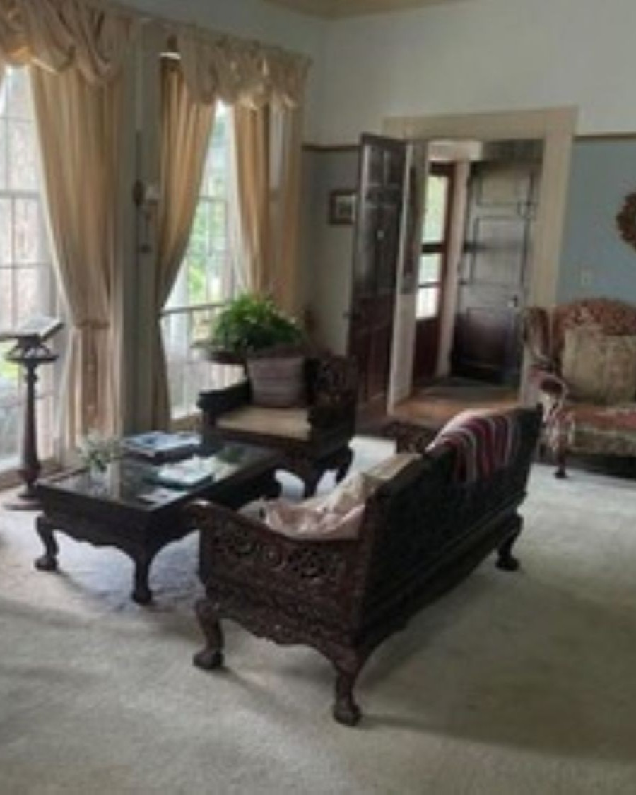
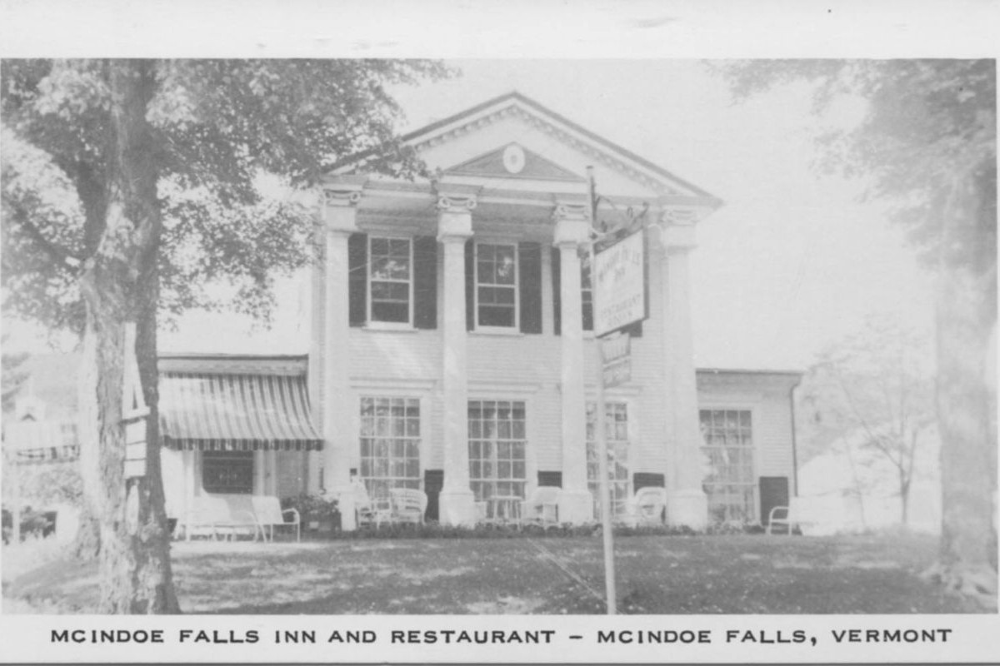
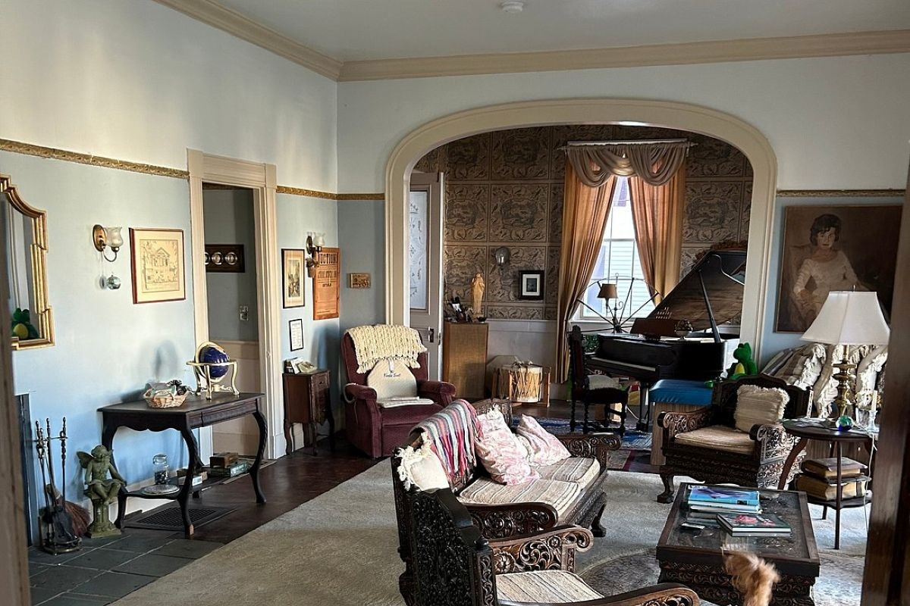
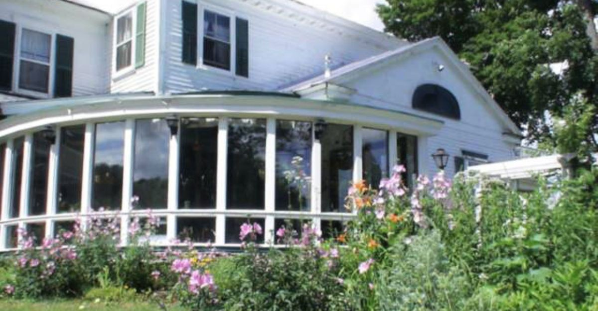
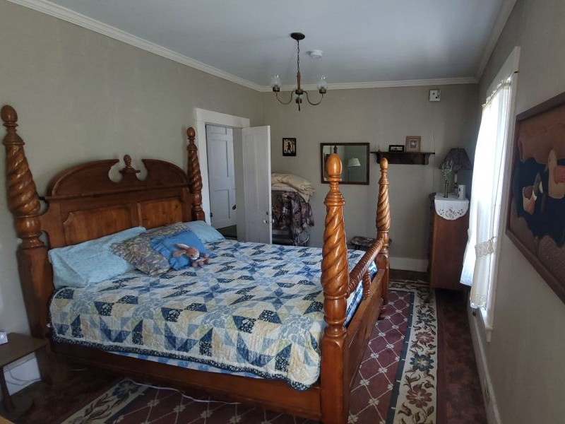
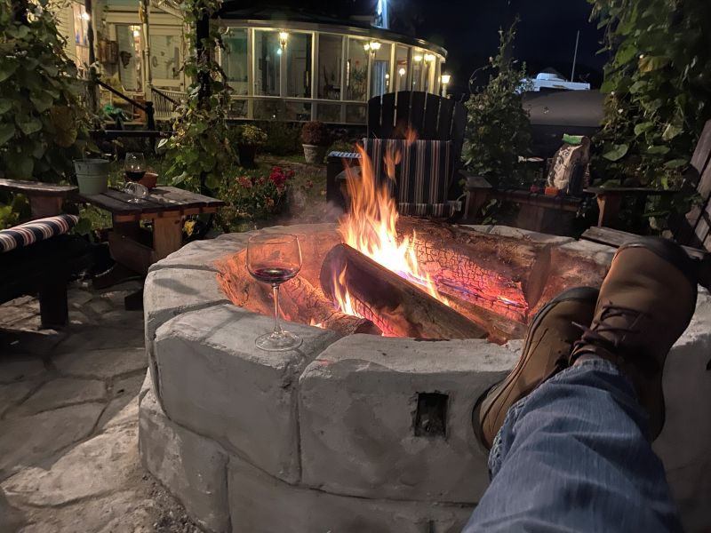
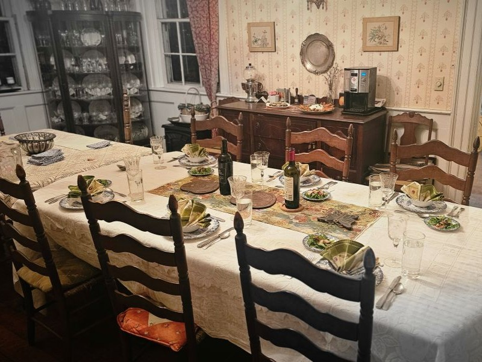
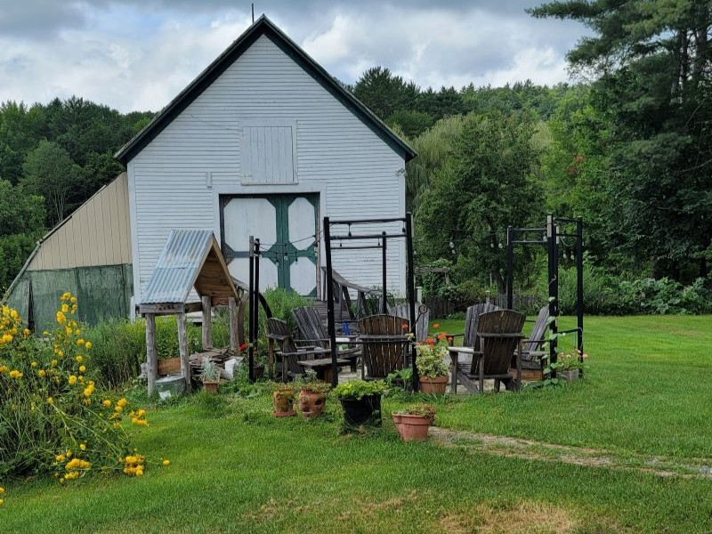
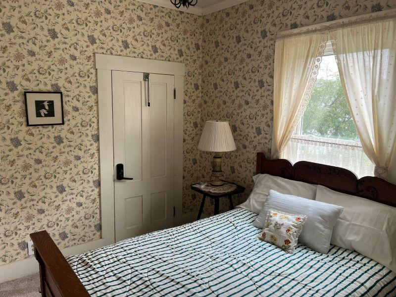

Our Story
The Inn
216 years of Vermont hospitality in one extraordinary home
Est. circa 1808
A Home Full of History, a Heart Full of Welcome
When Colonel Alexander Harvey and his fellow Scottish settlers arrived in Barnet, Vermont in the 1770s, they found hills that reminded them of home — rolling, green, and alive with possibility. The community they built along the Connecticut River became one of Vermont's most vital, with McIndoe Falls at its heart.
The building that would become McIndoe Falls Inn rose around 1808 in the Greek Revival style then sweeping New England — a confident, graceful architecture that declared permanence and pride. The hand-blown glass windows, still in their original frames, are among the oldest surviving in Vermont's Northeast Kingdom.
Today, Gloria Laborie and her family have stewarded this remarkable property for over 50 years — welcoming guests with the same warmth and personal touch that has always defined this place.

What Makes Us Unique
The Character of the Inn
Greek Revival Architecture
Built circa 1808, the inn's symmetrical facade, tall columns, and classical proportions are textbook Greek Revival — a style chosen to evoke permanence and civility.
Original Hand-Blown Glass
The wavy, imperfect window glass — hand-blown by 19th-century artisans — still frames every view of Vermont. Morning light through these windows is something to witness.
Thirteen-Foot Ceilings
The soaring ceilings throughout the main house create an airy grandeur rare in surviving buildings of this era, and keep rooms cool on warm Vermont summer days.
Common Room & Fireplace
The heart of the inn. Gather by the fire with fellow guests, play a game, share a glass of wine, or simply sit and watch the flames. Vermont evenings are made for this.
Antiques from Around the World
Decades of careful collecting fill every room with curiosities, fine furniture, and art gathered from around the globe — engaging, not cluttered; elegant, not stuffy.
Kitchen Garden & Grounds
The inn's vegetable and herb garden grows through summer and early fall. The lawn, garden paths, and peaceful outdoor spaces are yours to wander — pure Vermont at every turn.
History
A Village, a Home, a Legacy
McIndoe Falls is one of Barnet's five historic village centers, each with its own distinct character shaped by the people and industries that called it home.
Barnet Chartered
The town of Barnet, Vermont is officially chartered. Scottish immigrants begin arriving, drawn by landscape that echoes their homeland.
Scottish Settlement
Waves of Scottish settlers establish Barnet's five villages. The McIndoe family — for whom the falls are named — become prominent landowners along the Connecticut River.
The Inn Is Built
Construction of what would become McIndoe Falls Inn in the Greek Revival style. Original hand-blown glass windows, 13-foot ceilings, and fine woodwork define the structure.
Village at Its Peak
McIndoe Falls becomes the most populous village in Barnet, home to the largest lumber operation in northern Vermont — 80 employees, 15 million board feet annually.
McIndoes Academy Founded
The Academy opens, serving the community for over a century until 1969. The building still stands, listed on the National Register of Historic Places.
Post Office Established
The village post office is established as "McIndoes Falls," cementing the community's identity and ongoing importance to the region.
Gloria & Family
Gloria Laborie and family take stewardship of the inn, operating it as a beloved bed & breakfast for over 50 years — one of the most beloved bed and breakfasts in the Northeast Kingdom.

"Our 216-year-old, seven-bedroom Bed and Breakfast Inn — with three apartment-style units in our inn annex — nestled in the heart of Vermont's Northeast Kingdom offers you a peaceful and genuinely unique experience."
— Gloria Laborie, InnkeeperCommon Area & Grounds
Spaces to Gather, Relax & Breathe
The inn is more than a place to sleep — it's a place to settle in

Beyond your room, the inn offers inviting shared spaces that make a stay here feel more like visiting old friends than checking into a property. The common room with its fireplace is the natural gathering point — whether you want company or just a warm, quiet corner.
Step outside and you're in Vermont. The kitchen garden, the lawn, and the unhurried rhythm of the grounds are as much a part of the experience as the historic rooms themselves.
- ✓ Common room with working fireplace
- ✓ Fresh-roasted coffee, tea & hot chocolate available
- ✓ Games, ice, and glasses provided for guests
- ✓ Kitchen garden and peaceful outdoor grounds
- ✓ Free WiFi and on-site parking included
Photo Gallery
See the Inn





